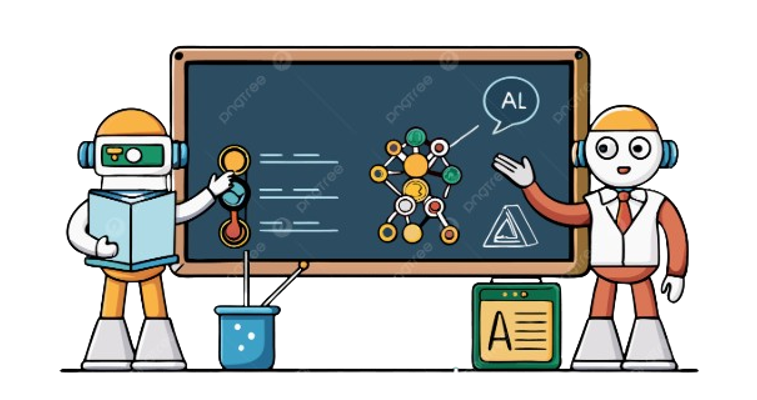

📝Contenidos
Introducción
El proyecto “ARAÑA-TECH” está orientado a estudiantes de Educación General Básica, con el objetivo de introducirlos al mundo de la programación a través de la construcción de una araña robótica, esta iniciativa se fundamenta en una propuesta educativa interdisciplinaria que vincula áreas clave del currículo nacional como Tecnología, Matemáticas y Ciencias Naturales, permitiendo desarrollar habilidades esenciales como el pensamiento lógico, la resolución de problemas, la creatividad y el trabajo en equipo.
ACTIVIDAD DE INICIO
Encuentra el compañero de cada robot creado por el ser humano a lo largo de la historia.
Robótica Educativa
La robótica educativa es una metodología de enseñanza que permite a los estudiantes construir y programar robots como medio para desarrollar habilidades cognitivas, técnicas y socioemocionales. Se basa en el enfoque STEM (Ciencia, Tecnología, Ingeniería y Matemáticas) y busca fomentar un aprendizaje significativo, activo y contextualizado. Esta herramienta facilita la comprensión de conceptos abstractos al convertirlos en experiencias tangibles y prácticas (Sullivan, 2021).
Importancia de la robótica en la vida cotidiana
La robótica ha dejado de ser un elemento exclusivo de la industria o la ciencia para formar parte de múltiples contextos cotidianos. Su aplicación se extiende a sectores como la medicina, la educación, la agricultura, la seguridad y el hogar. Este proceso de expansión tecnológica permite que los estudiantes comprendan que el aprendizaje de la robótica tiene aplicaciones reales que impactan directamente en la sociedad (Sanchéz, 2022). Integrar estos conocimientos en el aula favorece una visión crítica y propositiva, en la que los estudiantes no solo consumen tecnología, sino que aprenden a crearla y utilizarla de manera responsable.